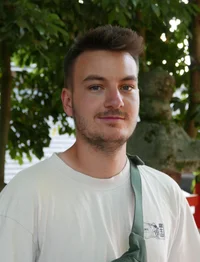

SPARC: Reliable Spatial Annotations from Robot Demonstrations at Scale
Turning robot demonstrations into reliable spatial supervision, with explicit control over annotation quality at scale.
Best Paper Award @ Lab2Production Workshop RSS 2026

PhD Researcher @ IRL-KIT
Spatiotemporal representations and reasoning for robot learning
I’m a PhD researcher at KIT’s Intuitive Robots Lab, advised by Rudolf Lioutikov.
My research focuses on spatiotemporal representations and reasoning in embodied foundation models: how to supervise them with automatically generated data at scale, and how to design architectures that turn them into robust, generalizable robot behavior.
I received my master’s degree in Computer Science from KIT. During my studies, I interned at SAP SE and IONOS.
Turning robot demonstrations into reliable spatial supervision, with explicit control over annotation quality at scale.
Best Paper Award @ Lab2Production Workshop RSS 2026
Sparse, task-relevant scene graphs make robot policies interpretable and more robust to visual distractors.
Photorealistic simulated scenes with pixel-perfect part, affordance, depth, and 6D pose labels, generated with a zero-shot LLM-based asset pipeline.
Gaussian prototypes on the hypersphere give interpretable prototypical part networks that are robust to hyperparameter choices.
Compact B-spline action tokens enable fast parallel decoding and smooth robot trajectories, without separate tokenizer training.
Automatically segmenting and labeling over 115,000 trajectories from 430+ hours of robot demonstrations with pretrained foundation models.